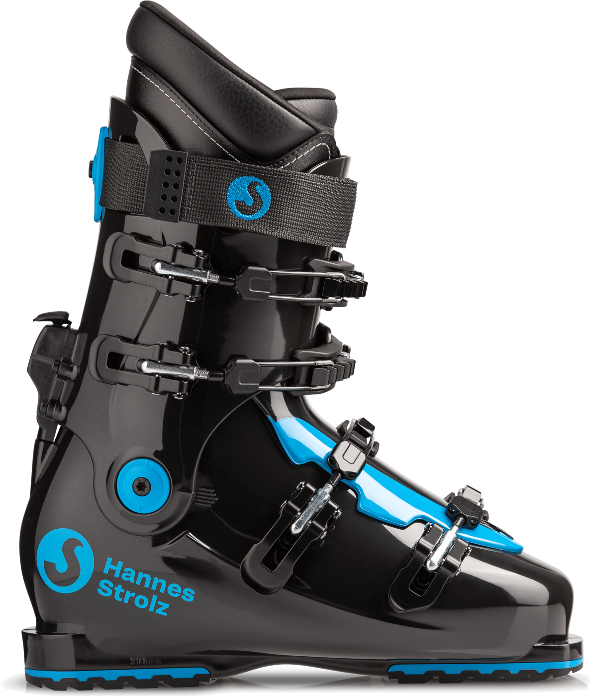
Evolution S – Black Pearl
De meest verkochte Strolz all round skischoen. Voor de intermediate tot gevorderde skiër.
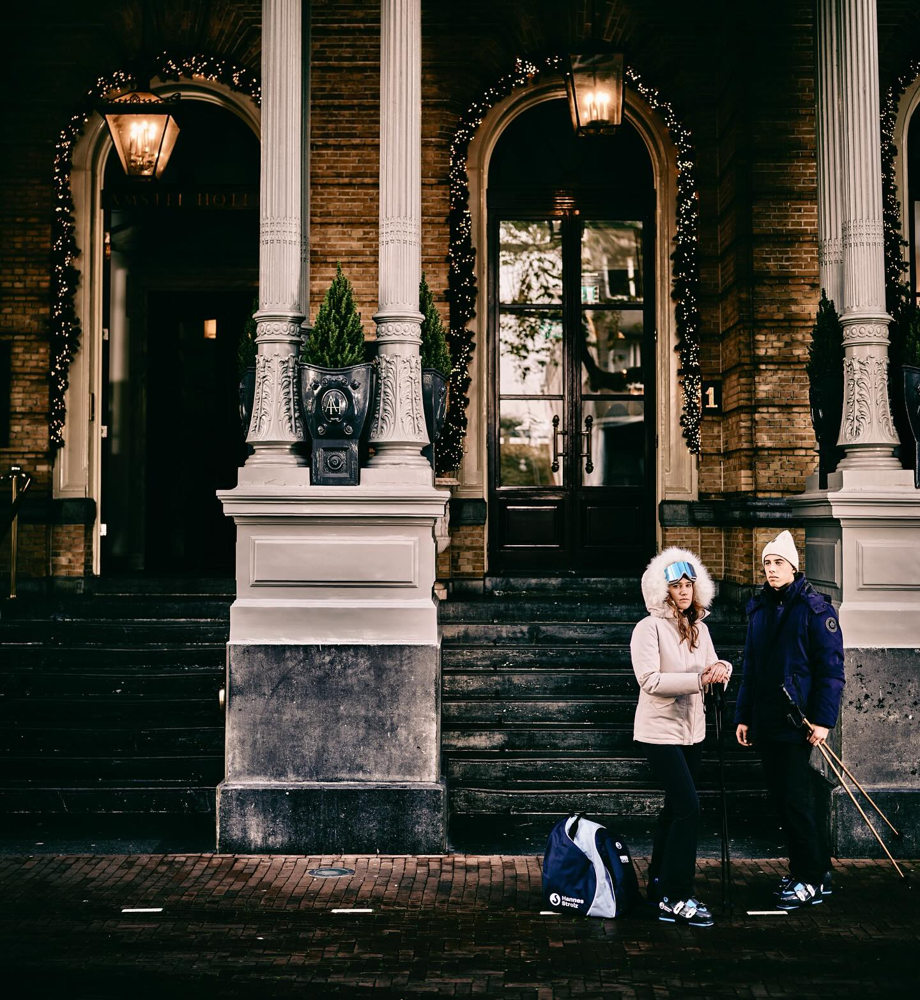

Echt handwerk door ervaren orthopedisch schoenmakers staan borg voor een perfecte pasvorm.
Net als bij een maatpak gaat het bij een Strolz maatskischoen om een geheel gepersonaliseerd product.
Elke skischoen wordt met de hand vervaardigd.
Elke Strolz skischoen is een volledig maatproduct. Zowel de buitenschaal als de binnenschoen worden voor elke individuele klant op maat gemaakt. De pasvorm is daarom altijd subliem.
Veel skiwinkels adverteren met op maat gemaakte skischoenen, maar men heeft het dan over thermoplastische buitenschoenen. Op zich ook een prima systeem maar het is niet 100% individueel op maat gemaakt. We spreken dan liever van semi-custom made.
Alleen bij Strolz Amsterdam (onderdeel van DutchBootFitter) wordt de schoen ook nog eens door een register-sportpodoloog aangemeten. Hierdoor bent u ervan verzekerd dat uw nieuwe Strolz schoen niet alleen perfect zit, maar dat ook eventuele voetklachten tijdens het skiën adequaat worden aangepakt.
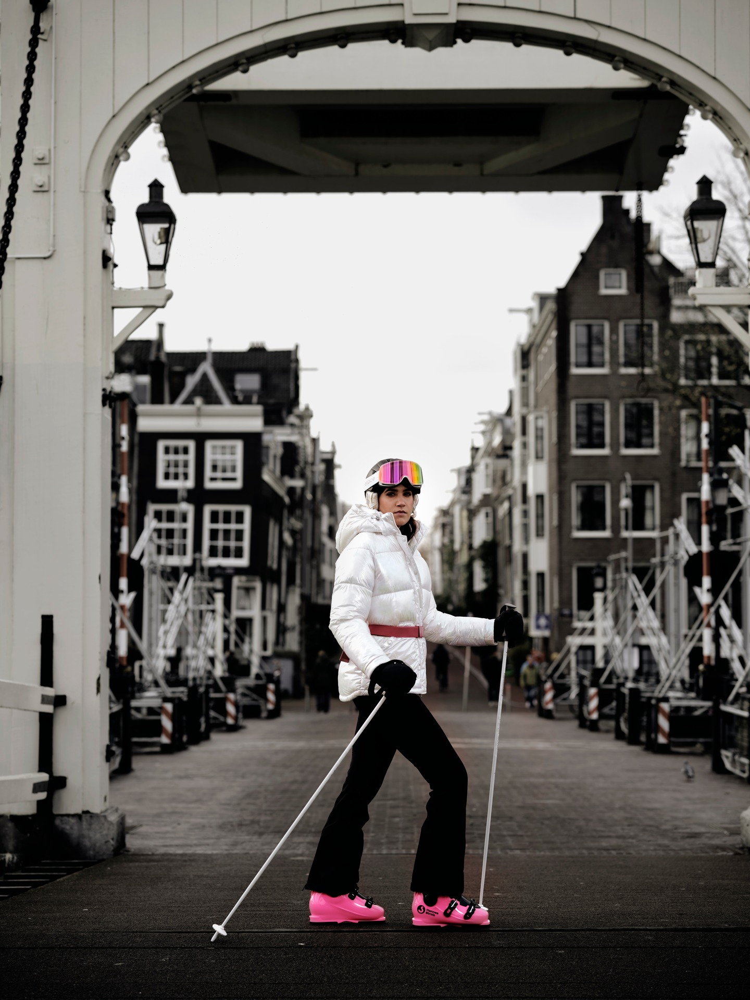
Zowel de buitenschaal als de binnenschoen worden voor elke individuele klant op maat gemaakt.
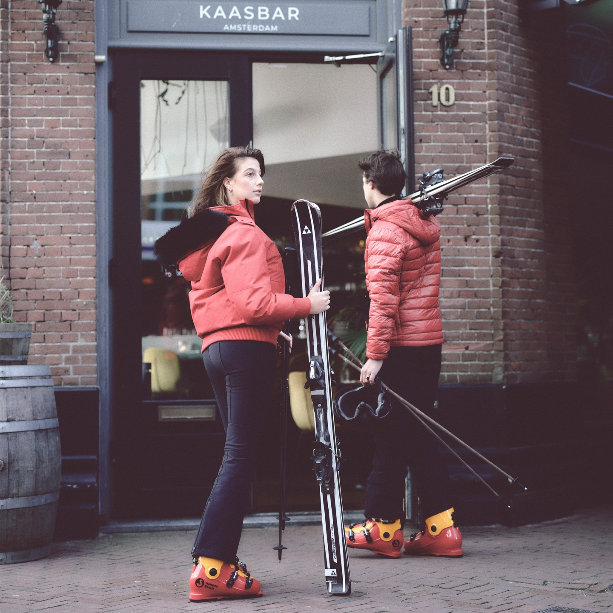
De handgemaakte lederen binnenschoen is van uitzonderlijke kwaliteit.
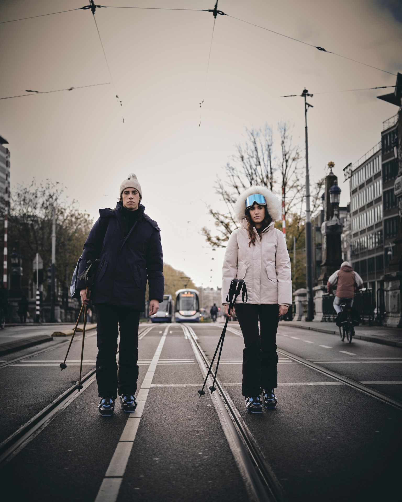
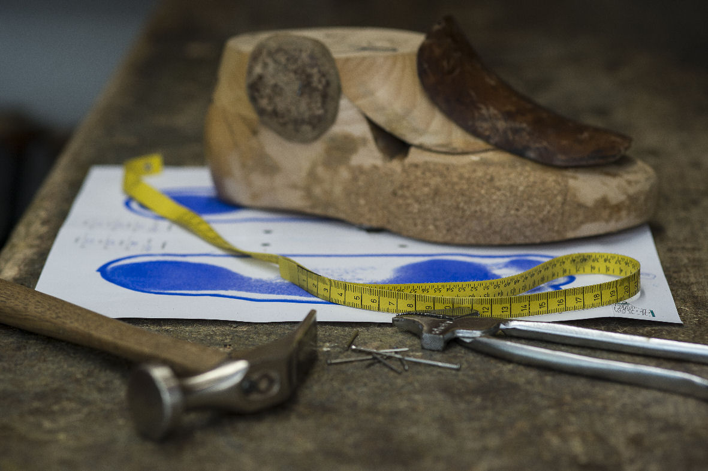
Voor elke op maat gemaakte Strolz skischoen wordt er een houten leest gemaakt naar de maten van uw voet. Dit is de manier waarop ook (orthopedische) schoenmakers dit doen. Elke leest wordt op basis van een scan van uw voet gemaakt. Deze leest wordt gebruikt om de skischoenen op maat te maken.

De Strolz binnenschoen is uniek in zijn soort. De handgemaakte lederen binnenschoen is van uitzonderlijke kwaliteit. Echt handwerk door ervaren schoenmakers staan borg voor een perfecte pasvorm. Deze wordt door middel van gepatenteerd schuim volledig aan uw voet aangepast. De pasvorm is fantastisch.
De skischoen van Strolz bestaat 100 jaar en dat wordt gevierd met een nieuwe naam: Hannes Strolz. Naar de oprichter van het iconische skischoen merk.

De meest verkochte Strolz all round skischoen. Voor de intermediate tot gevorderde skiër.
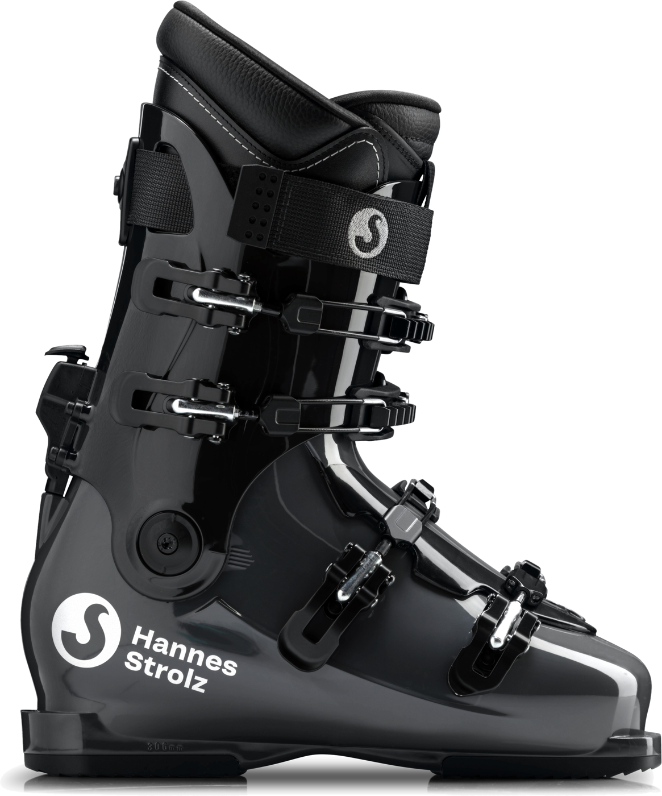
Een allround skischoen voor de gevorderde skier die ook comfort zoekt. Het cabrio model maakt instappen makkelijk. Met loopstand.
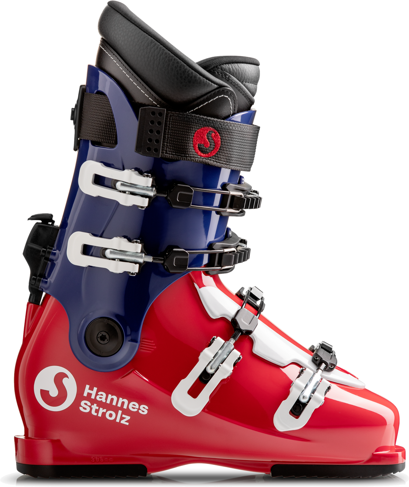
Een skischoen voor de sportieve gevorderde skier. Het cabrio model maakt instappen makkelijk. Met loopstand.
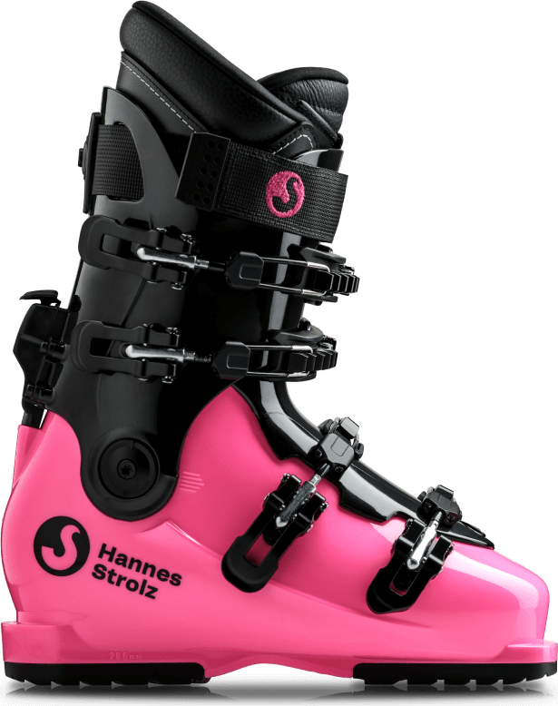
Dezelfde skischoen als de Evolution C echter in een opvallende kleur. Een allround skischoen voor de gevorderde skier die ook comfort zoekt. Het cabrio model maakt instappen makkelijk. Met loopstand.
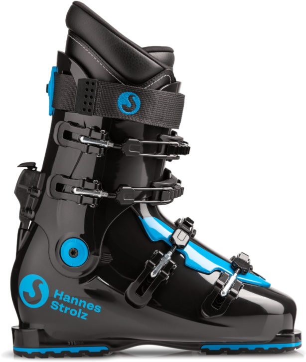
De kwaliteit van een Hannes Strolz skischoen staat op eenzame hoogte: deze schoenen gaan minimaal 15-20 jaar mee. Maar klanten die er 30 jaar mee doen zijn geen uitzondering.
Een set op maat gemaakte Hannes Strolz skischoenen kost € 1195,- all in, ongeacht het model. Deze prijs is inclusief de sportzolen.
Register-podoloog, -sportpodoloog en niet in de laatste plaats ‘Certified Master Bootfitters’.
Zij brachten het ‘bootfitten’ naar Nederland. En reeds in 2008 werden de eerste klanten geholpen met het aanpassen van hun eigen skischoenen. Inmiddels is de dienstverlening uitgebreid met het aanbieden van volledig op maat gemaakte skischoenen van Hannes Strolz.
Een paar op maat gemaakte skischoenen koopt u niet voor één seizoen en een goed advies is cruciaal. Hiervoor nemen wij uitgebreid de tijd. Vandaar dat wij uitsluitend op afspraak werken.
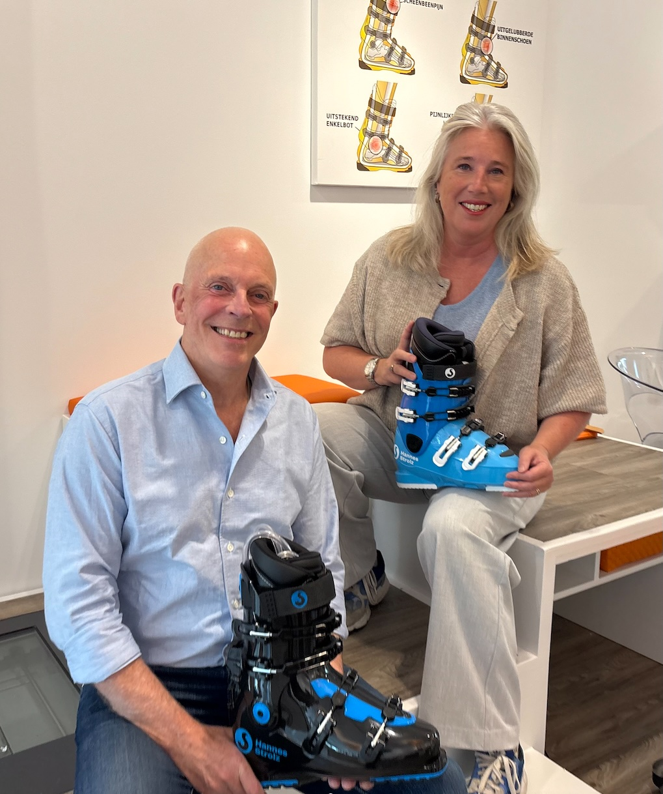
U kunt online een afspraak maken. U kunt echter ook telefonisch een afspraak maken via: 020-3033866.